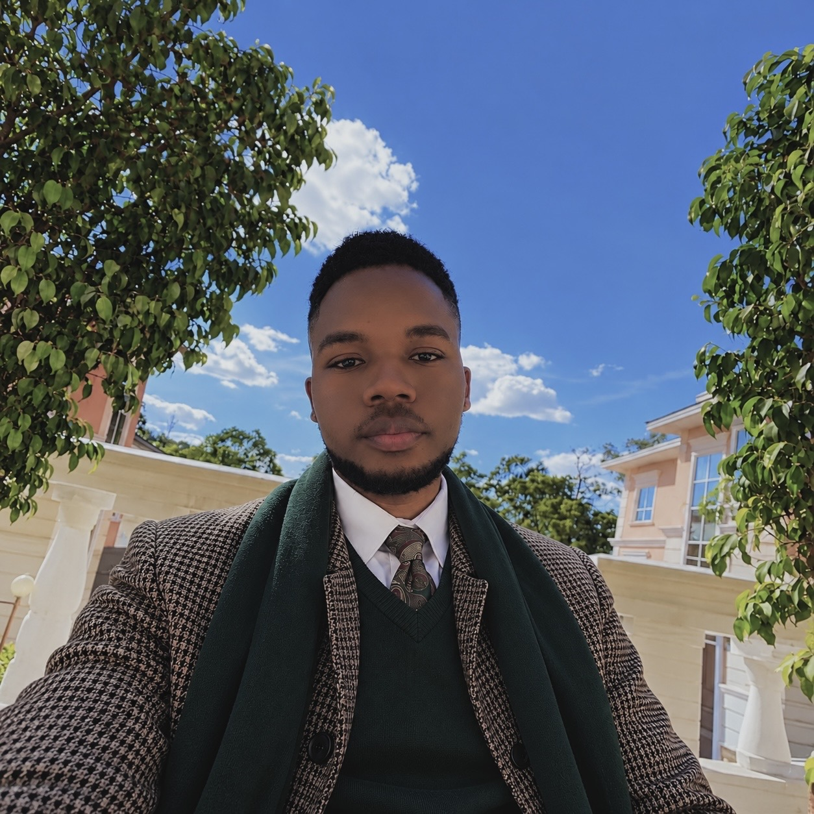
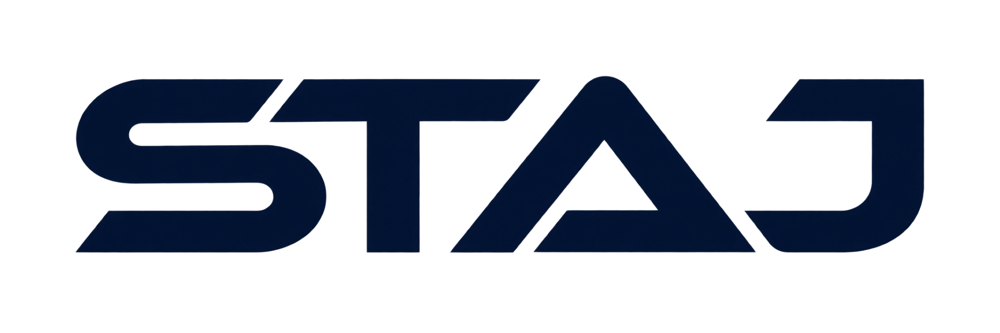
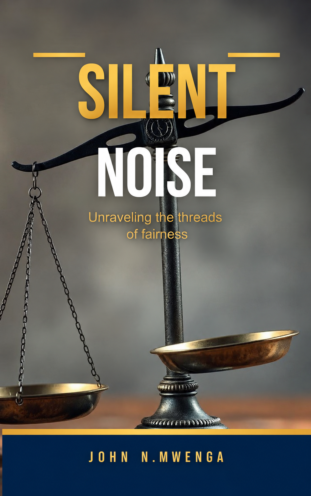
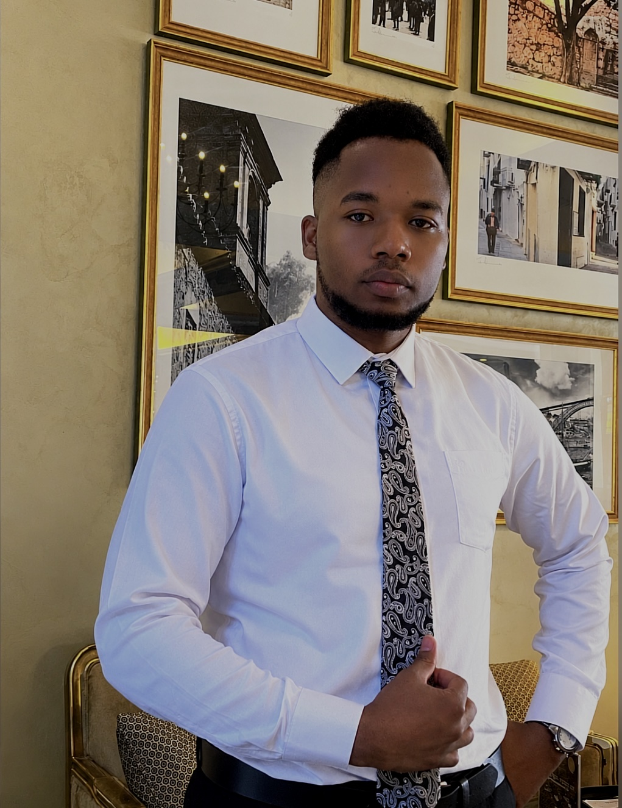
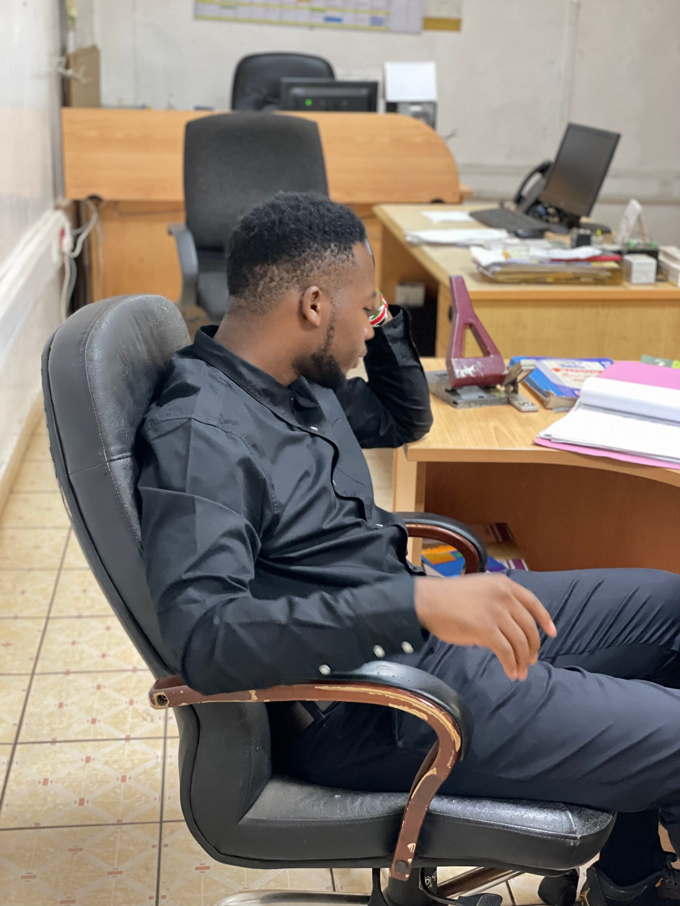

FOUNDER
Beyond Seizure
Global.
An initiative I founded to educate, empower and challenge the stigma around seizures.
Visit BSG ↗A PERSON. MANY POSSIBILITIES.
I'm John N.mwenga — founder of Beyond Seizure Global and STAJ, a builder with a mind for technology and a heart for people.

A LITTLE ABOUT ME
A curious mind. A love for building things. A belief that ideas can make a difference.
I move between two disciplines most people keep separate: the exacting, measurable world of machines and data and the slower, more ambiguous work of writing and meaning.
I work at the intersection of engineering, data and software, combining practical engineering knowledge with analytical and digital problem solving. My goal is to build solutions that connect physical systems with data and technology from understanding how machines operate to using software and analytics to make better decisions.
Reliable, detail-driven, and multidisciplinary — five years across writing, editing, and content strategy; three years focused on high-volume AI training-data annotation, data analysis, and technical documentation. Grounded in hands-on mechanical engineering and electrical work, and fluent in the languages of both machines and prose.
My skills & background ↗FOUNDER & AUTHOR
Ideas with a life beyond me.
FOUNDER
An initiative I founded to educate, empower and challenge the stigma around seizures.
Visit BSG ↗
BEAUTY & WELLNESS, CONNECTED.FOUNDER · NOW LIVE
A booking platform I founded to connect clients with salons, spas, barbershops and beauty and wellness businesses.
Visit STAJ ↗
AUTHOR
Unraveling the threads of fairness.
A book I've written, exploring fairness through the lens of Silent Noise.
Explore the book ↗IN PICTURES
A place for moments,
people and everyday life.


SELECTED WORK
Explore my projects across web, data, writing and engineering.
View my projects ↗LET'S CONNECT